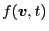
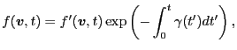
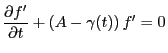
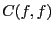
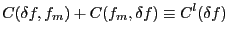
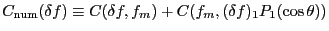
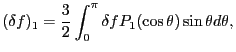

Next: Bibliography Up: runaway_problem Previous: Runaway rate
The distribution function of electrons, , satisfies the following equation
|  | (24) |
|  | (25) |
|  |  | (26) |
In order to artificially remove the Ohm heating from the system, the second term of the linearized collision operator is modified to include only the first Legendre harmonic, i.e. the collision operator actually used in the numerical calculation is
|  | (27) |
|  | (28) |
YouJun Hu 2012-12-08